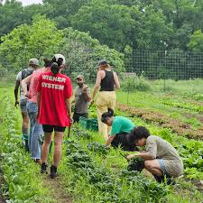

Building Cities That Feed Us
We are a global collective of urban farmers, planners, and visionaries transforming rooftops and vacant lots into thriving high-yield ecosystems.



A Vision Rooted in Community
UrbanRoots isn't just about growing food; it's about growing connection. We believe that every patch of soil is a chance to build a more resilient and integrated neighborhood.
Zero-Distance Food
Eliminating transport emissions by growing produce exactly where it's consumed.
Social Infrastructure
Gardens serving as vital hubs for community gatherings and shared labor.
Food Sovereignty
Empowering residents to take control of their nutrient supply chains.
Measurable Success Across Our Hubs
Voices from the Green Frontier
Meet the visionaries who are leading the charge in their local chapters across the globe.

Elena Rossi
Milan, Italy"We turned a vacant rooftop in the industrial district into a haven for biodiversity and fresh produce."

David Wu
Singapore"Integrating vertical hydroponics into our high-rise community has redefined local food security."

Sarah Jenkins
New York, USA"Seeing neighborhood kids harvest their first tomatoes is the true reward of this initiative."